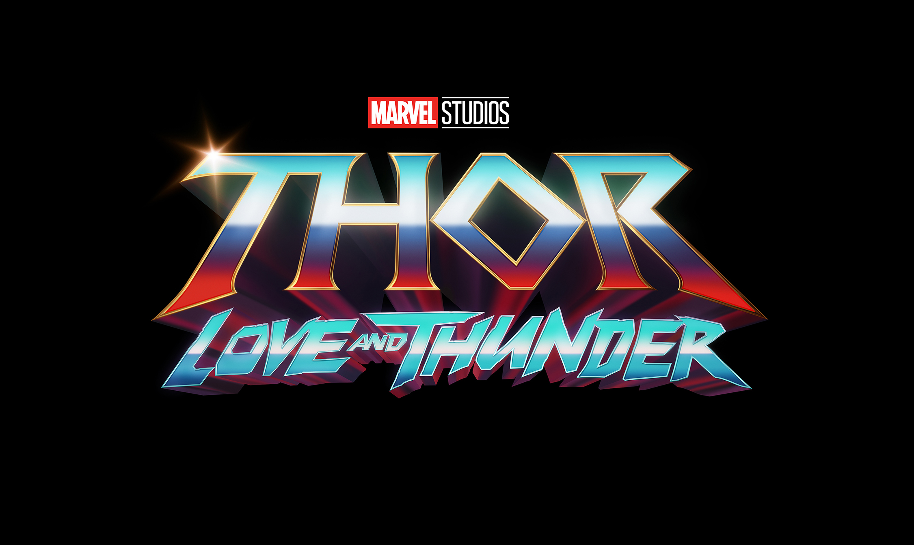

Sora
Walcome To Sora Blog
Marvel Siapkan 5 Film yang Rilis Tahun 2022, Termasuk Spider-Man

Belakangan ini film-film di bioskop mulai kembali dilirik setelah pandemi sempat membuat industri perfilman menjadi hampa. Apalagi baru-baru ini film "Spider-Man: No Way Home" mampu menarik antusias yang luar biasa dari masyarakat untuk menyaksikan film di bioskop. Menyambut tahun 2022 yang tinggal menghitung hari, Marvel Studios telah menyiapkan film-film menarik untuk kamu tonton. Termasuk salah satunya film "Spider-Man: Into The Spider-Verse 2" yang telah dinantikan di tahun 2022.
Selain "Spider-Man: No Way Home", Marvel juga telah menyiapkan kejutan untuk film-film yang akan dirilis pada tahun 2022. Simak ulasan berikut dan catat jadwalnya, ya!
1. Morbius
Tahun 2022 dibuka oleh Marvel dengan "Morbius" yang akan tayang pada 28 Januari 2022. Tokoh Michael Morbius ini akan diperankan oleh Jared Letto yang sebelumnya sempat berperan sebagai Joker.
Sosok Morbius digambarkan sebagai seorang yang mengidap kelainan darah langka sejak kecil. Hal ini membuat ia sering mendapatkan perundungan dari teman-temannya. Ketika sedang berusaha menyembuhkan penyakit aneh yang dideritanya, proses penyembuhannya justru membuatnya berubah menjadi sesosok vampir yang menyeramkan.
2. Doctor Strange 2: In The Multiverse Of Madness
Film sekuel "Doctor Strange 2: In the Multiverse of Madness" cukup dinantikan oleh para penggemar Marvel Cinematic Universe. Film yang dibintangi Benedict Cumberbatch ini akan dirilis pada 6 Mei 2022. Dikisahkan, Doctor Strange akan menghadapi berbagai kesulitan setelah ia melakukan penelitian lebih mendalam mengenai Time Stone.
3. Thor 4: Love and Thunder

Bagi para pencinta superhero Thor, kamu tentu tak boleh melewatkan film "Thor: Love and Thunder" yang akan rilis pada 8 Juli 2022 mendatang. Film ini akan menjadi titik awal kembalinya Jane Foster yang diperankan Natalie Portman ke layar lebar.
4. Black Panther 2: Wakanda Forever

Ditulis dan disutradarai oleh Ryan Coogler yang juga menyutradarai film pertama, "Black Panther: Wakanda Forever" akan berfokus pada para karakter yang kita kenal di Wakanda. Film "Black Panther: Wakanda Forever" akan dirilis oleh Marvel pada 11 November 2022 mendatang.
5. Spider-Man: Into The Spider-Verse 2
Bicara soal Spider-Man, di tahun 2022 Marvel akan mengeluarkan sekuel dari film animasi "Spider-Man: Into the Spider-Verse". Di sekuelnya ini, akan muncul sosok Spider-Man dari masa depan serta Spider-Man baru lainnya. Dalam teaser yang sudah dibagikan oleh Sony, terlihat Miles terlihat kesulitan ketika melawan Spider-Man 2099. Nantikan juga Spider-Man baru lainnya, termasuk Jessica Drew alias Spider-Woman (Issa Rae) dan Japanese Spider-Man 1978 (Takuya Yamashiro). Film Spider-Man: Into The Spider-Verse 2 ini akan tayang pada 7 Oktober 2022 mendatang.